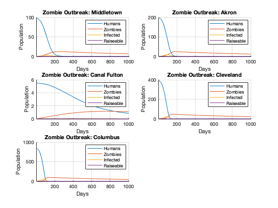
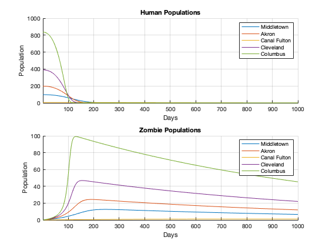

clc; clear all; close all;
numDays = 1000;
T = 0.5;
t = linspace(1,numDays,numDays);
alpha = 0.005;
beta = 0.0055;
zeta = 0.5;
delta = 0.001;
rho = 0.5;
c = 0.002;
p = 0.001;
Towns = ["Middletown", "Akron", "Canal Fulton", "Cleveland", "Columbus"];
Populations = [97.5, 197.859, 5.479, 389.521, 835.957];
hArr = [zeros(1,numDays); zeros(1,numDays); zeros(1,numDays); zeros(1,numDays); zeros(1,numDays)];
zArr = [zeros(1,numDays); zeros(1,numDays); zeros(1,numDays); zeros(1,numDays); zeros(1,numDays)];
figure;
for index = 1:5
disp(Towns(index))
disp(Populations(index))
S = zeros(1,numDays);
I = zeros(1,numDays);
Z = zeros(1,numDays);
R = zeros(1,numDays);
K = zeros(1,numDays);
S(1)= Populations(index);
for k = 1:numDays-1
SK1 = p*S(k) - beta*Z(k)*S(k) - delta*S(k) + c*Z(k);
IK1 = beta*Z(k)*S(k) - rho*I(k) - delta*I(k);
ZK1 = rho*I(k) + zeta*R(k) - alpha*S(k)*Z(k) - c*Z(k);
RK1 = delta*S(k) - zeta*R(k);
KK1 = delta*I(k) + alpha*S(k)*Z(k);
MS1 = S(k) + (T/2)*SK1;
MI1 = I(k) + (T/2)*IK1;
MZ1 = Z(k) + (T/2)*ZK1;
MR1 = R(k) + (T/2)*RK1;
MK1 = K(k) + (T/2)*KK1;
SK2 = p*MS1-beta*MZ1*MS1-delta*MS1+c*MZ1;
IK2 = beta*MZ1*MS1-rho*MI1-delta*MI1;
ZK2 = rho*MI1+zeta*MR1-alpha*MS1*MZ1-c*MZ1;
RK2 = delta*MS1-zeta*MR1;
KK2 = delta*MI1+alpha*MS1*MZ1;
MS2 = S(k)+(T/2)*SK2;
MI2 = I(k)+(T/2)*IK2;
MZ2 = Z(k)+(T/2)*ZK2;
MR2 = R(k)+(T/2)*RK2;
MK2 = K(k)+(T/2)*KK2;
SK3 = p*MS2-beta*MZ2*MS2-delta*MS2+c*MZ2;
IK3 = beta*MZ2*MS2-rho*MI2-delta*MI2;
ZK3 = rho*MI2+zeta*MR2-alpha*MS2*MZ2-c*MZ2;
RK3 = delta*MS2-zeta*MR2;
KK3 = delta*MI2+alpha*MS2*MZ2;
MS3 = S(k)+(T)*SK3;
MI3 = I(k)+(T)*IK3;
MZ3 = Z(k)+(T)*ZK3;
MR3 = R(k)+(T)*RK3;
MK3 = K(k)+(T)*KK3;
SK4 = p*MS3-beta*MZ3*MS3-delta*MS3+c*MZ3;
IK4 = beta*MZ3*MS3-rho*MI3-delta*MI3;
ZK4 = rho*MI3+zeta*MR3-alpha*MS3*MZ3-c*MZ3;
RK4 = delta*MS3-zeta*MR3;
KK4 = delta*MI3+alpha*MS3*MZ3;
S(k+1) = S(k)+(T/6)*(SK1 + 2*SK2 + 2*SK3 + SK4);
I(k+1) = I(k)+(T/6)*(IK1 + 2*IK2 + 2*IK3 + IK4);
Z(k+1) = Z(k)+(T/6)*(ZK1 + 2*ZK2 + 2*ZK3 + ZK4);
R(k+1) = R(k)+(T/6)*(RK1 + 2*RK2 + 2*RK3 + RK4);
K(k+1) = K(k)+(T/6)*(KK1 + 2*KK2 + 2*KK3 + KK4);
end
zArr(index,:) = Z;
hArr(index,:) = S;
subplot(3,2,index)
hold on
plot(t,S)
plot(t,Z)
plot(t,I)
plot(t,R)
legend('Humans', 'Zombies', 'Infected', 'Raiseable')
xlim([1,numDays])
grid on
xlabel('Days')
ylabel('Population')
plotTitle = 'Zombie Outbreak: ' + Towns(index);
title(plotTitle)
hold off
end
figure;
subplot(2,1,1)
hold on
grid on
plot(t,hArr(1,:))
plot(t,hArr(2,:))
plot(t,hArr(3,:))
plot(t,hArr(4,:))
plot(t,hArr(5,:))
title('Human Populations')
legend('Middletown','Akron','Canal Fulton','Cleveland','Columbus')
xlabel('Days')
ylabel('Population')
xlim([1,numDays])
hold off
subplot(2,1,2);
hold on
grid on
plot(t,zArr(1,:))
plot(t,zArr(2,:))
plot(t,zArr(3,:))
plot(t,zArr(4,:))
plot(t,zArr(5,:))
title('Zombie Populations')
legend('Middletown','Akron','Canal Fulton','Cleveland','Columbus')
xlabel('Days')
ylabel('Population')
xlim([1,numDays])
hold off
Middletown
97.5000
Akron
197.8590
Canal Fulton
5.4790
Cleveland
389.5210
Columbus
835.9570
 